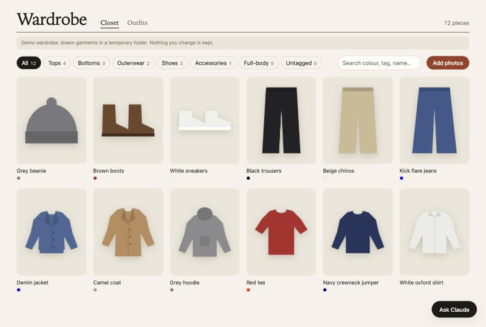
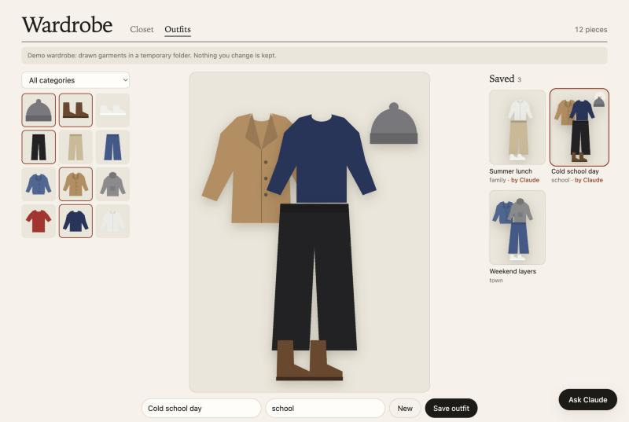

Try on outfits without emptying the wardrobe.
Photograph your clothes and GuardTheRobes cuts each piece out of its background. Lay outfits out on a board, or ask Claude to put one together. The photos stay on your Mac.
From a photo to a piece you can wear on screen
-
Photograph it
Shoot the garment on the floor or a bed, AirDrop it to your Mac and drop it into the closet.
-
GuardTheRobes cuts it out
The background is removed on your Mac, the colours are corrected, and the location data is wiped before anything is saved.
-
Put outfits together
Filter by category or colour, then drag pieces onto the board and save the outfit with a name and an occasion.

Demo mode, with garments drawn in code.
Ask Claude what to wear
Tell it the weather or the occasion. Claude reads your closet, looks at a short list of pieces and saves the outfit to your board, marked as its suggestion.
In the app
The Ask Claude button runs Claude Code with every built-in tool switched off: no shell, no files, no web. It only gets your wardrobe.
From any Claude Code session
The same wardrobe tools are registered for the project folder, so you can ask from the terminal too.
Cheap on purpose
Photos cost the most tokens, so Claude filters by tags first and only looks at up to six thumbnails.

Demo mode, with garments drawn in code.
The code is public. Your clothes aren't.
Photos and the database live in a folder outside the project, so they never reach git, GitHub or a server. Each rule on the label is enforced in code and covered by a test.
There is one exception, and it's yours to make: when you ask Claude to look at a piece, that thumbnail is sent to Anthropic as part of the conversation.
GuardTheRobes
- Stays on this Mac
- The server only listens on 127.0.0.1 and turns away requests from other websites.
- Location removed
- EXIF and GPS data are stripped before a photo is stored.
- Kept out of git
- The app refuses to start if the data folder is inside the repository.
- Claude can add, never delete
- Its tools tag pieces and save outfits. There is no delete tool.
Try it on your Mac
You need Python 3.11, Node 20 and macOS or Linux. Demo mode fills the closet with twelve drawn garments in a temporary folder, so nothing is kept.
The Claude features need Claude Code installed and signed in.
Get the code# one-time setup
make setup
# twelve drawn garments, nothing saved
make demo
# your own wardrobe, in ~/WardrobeData
make run